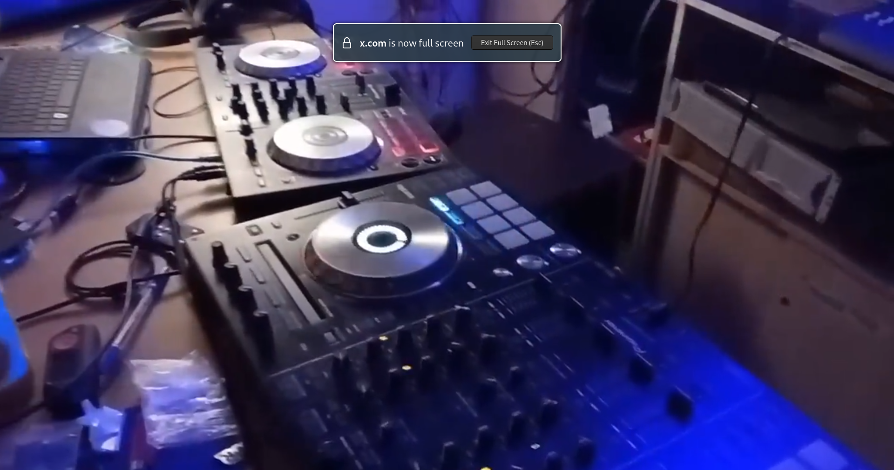

BORDEL
Transforming chaos into shared creations
What We Are, Why We Exist, and Our Vision
In it's most basic form, you can see Bordel as a community sanctuary for hackers, makers, artists, and anyone who embraces (peaceful/productive) chaos, creativity or technology.
Our vision is to create a space that connects technology and art, an environment where nonconformists can find their tribe to learn and grow together. Bordel welcomes the pathologically curious to come together to create, hack, learn, innovate and build community.
BORDEL is not just a physical space but a provocation where creative expression collides in a deliberate chaos. Its core wonders happen when people come together in an environment where open-mindedness, curiosity, being aware and discovery unfold in a playful manner. A place where members open up to question every reality, seek more experiences and knowledge, and share their thoughts with each other.
In a world that demands specialization, we choose integration. In a culture that rewards conformity, we celebrate divergence. In times that push for acceleration, we create space for reflection.
Step beyond the boundaries of what you know. Discover the questions you haven't yet thought to ask. Find your people-not those who mirror your certainties, but those who challenge them with authentic curiosity and genuine care Come to us not to escape reality, but to create a new one.
SPACE FOR EVERYONE
Bordel Hackerspace is designed to be versatile and welcoming, catering to a variety of activities, including:
-
Co-working Spaces
Comfortable areas with stable tables for everyone looking to get things done.
-
Makerspace
Fully equipped with tools for various projects - 3D printers, soldering stations, and more.
-
Community Bar
Offering Mate, Kombucha, and smoothies - all donations help support the space.

-
Audio Setup
Featuring speakers, a DJ controller, synths, and equipment for casual jams and events.
 -
Workshops and Meetups
An open area for community gatherings and workshops, whether public or private.
-
We operate on a do-ocracy principle, meaning that everyone's input is valued. We want to hear your ideas on how you'd like to utilize this space.
A GLIMPSE AT OUR ACTIVITIES
The original was a small space with relatively small but very community and many visitors. Our members contributed to bunch of cool projects and organized a ton of events for art and education. We...
-
built Catropy, a cat toy device for extracting secure entropy from felines used to secure cryptography in KZG ceremony
-
created the very first Bitcoin Lightning NFC payments and pioneered the technology
created an art installation from upcycled hardware and cartridges
built Bleskomat, first offline Bitcoin Lightning ATM using LNURL and helped to onboard hundreds of people
hosted FOSS software for the community, providing a privacy respecting alternative to proprietary services
hosted nodes and tools for various blockchains, including mixers
organized music events Synapse, hosting local artists and DJs
hosted a coordination for testing Ethereum switch to proof of stake
created an online 2D hackerspace to for events during covid and remotely
organized workshops on 3D printing and creative prototyping
workshops on biology and sustainability, growing mycelium in the space
workshops on neopixel, art with programmable LED lights
Security/privacy workshops, installing GrapheneOS, GNU/Linux
workshop on hacking Playstation and liberating hardware
organized non-conformist hackatons Hackatoshi's Flying Circuit
workshops on hacking self defense tools
And even more! Combining all of the above, Bordel space creates a unique atmosphere for creativity, hacking and relax. We welcome everybody from all kinds of communities to join us and use the space.
Join us
We are operating in private signal group. More info to come.